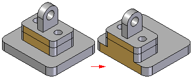
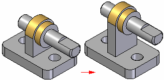
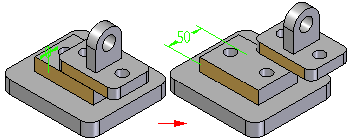
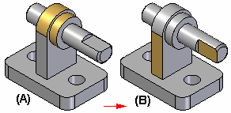
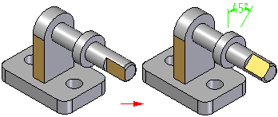
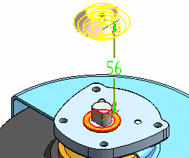

Understanding Assembly relationships
Developing an understanding of the various assembly relationships is fundamental to successfully creating assemblies.
When you place a part or subassembly into an assembly, you define how the part is positioned with respect to the other parts by applying assembly relationships. Available relationships include Mate, Planar Align, Axial Align, Insert, Connect, Angle, Tangent, Cam, Path, Parallel, Gear, Match Coordinate System, Center-Plane, Rigid Set, and Ground. For more information, seeShow list of assembly relationships.
In addition to the traditional assembly relationships listed above, the FlashFit option reduces the steps required to position a part using the Mate, Planar Align, or Axial Align relationships.
All relationship options in addition to the FlashFit option are located on the Assemble - Relationship Types list on the Assemble command bar and the relationship-specific command bars for each type of relationship.
Part positioning workflows
The following workflows are used to position parts in an assembly:
If you are new to modeling, focus on learning both FlashFit and the Traditional workflows. As your expertise in building assemblies increases, explore the other available workflows. All workflows are discussed in more detail later in this topic. The Slider tutorial demonstrates FlashFit capabilities.
Maintaining assembly relationships
By default, Solid Edge maintains the relationships that are defined when the part is position. If the Maintain Relationships option is set on the Parts Library shortcut menu (right-click on the white space in the Parts Library) when a part is placed, the relationships that are applied also control the behavior of the part when it is modified. For example:
-
If a Planar Align relationship is applied between two parts, they remain aligned when either part is modified.

-
If an Axial Align relationship is applied between two parts, they remain axially aligned when either part is modified.

Assembly relationships can be viewed, modified, or deleted using the Assembly PathFinder.
If the Maintain Relationships command is cleared when a part is placed, the assembly relationships must still be used to position the part in the assembly. However, instead of applying these relationships on the part, the software applies a Ground relationship. Grounded parts do not update their positions in the assembly when other parts are modified.
Capturing design intent
To fully control one part in relation to the other parts in an assembly, a combination of assembly relationships must be applied. There is often more than one way to apply relationships that will position a part correctly. It is important to choose the way that best captures design intent, because this makes the assembly easier to understand and edit.
When positioning a part, it may be helpful to keep in mind how the part will react to future modifications. Although the part may be positioned correctly using a particular set of assembly relationships, it may not behave as expected if modifications are made.
To gain more experience placing parts in an assembly, it can be useful to make minor design modifications and observe how the parts in the assembly react. If the assembly does not behave as expected, relationships can be deleted and reapplied using a different approach. With more experienced, it will become easier to see which set of relationships correctly position parts and also provide the desired design intent behavior when design modifications are made later in the process.
Assembly relationships and part movement
When a part is fully positioned in an assembly, it cannot move in any direction in relation to the assembly. The first assembly relationship that is placed controls some part movement, but the part is still free to move in some other direction by sliding along or rotating around the X, Y, or Z axes.
Applying more relationships controls more movement until the part is fully positioned. The types of relationships and options that are applied determine how the relationships control part movement.
Parts that must be able to move in an assembly cannot be fully positioned. This is generally achieved by defining rotational relationships that are not locked, ranges of motion that allow movement, or floating relationships that determine the extent of movement as defined by another part or subassembly. Parts can also be made to be adjustable. For more information, see Adjustable and rigid assemblies.
FlashFit workflow
The FlashFit workflow reduces the steps required to position parts using Mate, Planar Align, and Axial Align relationships when compared to the traditional workflow. Because many parts are positioned using these relationships, FlashFit is appropriate and quicker in many situations.
The FlashFit relationship is the default assembly relationship which makes the FlashFit workflow the default workflow. This default condition is controlled through the Assemble Command bar Options dialog box.
When possible, FlashFit moves the first part that was selected when applying the relationship while the second part remains stationary. If the first part is fully constrained, the second part will move.
The FlashFit option can then be used to define additional relationships required to fully position the part in the assembly, or another relationship type can be selected.
Using FlashFit for positioning fasteners
FlashFit also allows more flexibility to use edges, in addition to faces, when positioning a part using mate, axial align, and planar align relationships. This can be especially useful when positioning a fastener, such as a bolt into hole.
For example, when positioning a part using an Axial Align relationship, a circular edge cannot be selected. However when using FlashFit, a circular edge on both the placement part and target part can be selected to completely position the part in two steps.
FlashFit options
The Options dialog box on the Assemble command bar is used to set which FlashFit options to consider when placing a part. For example, any combination of the following element types can be specified placing a part: Planer faces, Cylindrical faces, Linear edges, or Points. This allows the behavior of the FlashFit command to be tailored for the part that is currently being placed. This action can help limit the number of identified elements to only those elements being sought when applying a relationship.
Moving and rotating parts with FlashFit
When using FlashFit, the placement can be moved or rotated into a more convenient location. To move the part, position the cursor over the part and drag the cursor.
To rotate the part, press the Ctrl key while dragging the cursor. If any relationships have already been applied to the placement part, the movement or rotation is limited to the available degrees of freedom.
Traditional workflow
The traditional workflow requires the user to perform each step required to position a part using assembly relationships. This approach allows new users to gain a full understanding of the part positioning process. The Assembly command bar and prompts that are unique to each type of relationship, guide the user through the positioning process.
The traditional workflow is also preferred when positioning parts using relationships that FlashFit does not recognize, such as Angle, Cam, Parallel, Path, and Tangent relationships.
Reduced Steps workflow
The Reduced Steps workflow eliminates the part selection and accept steps in the traditional workflow. To use this option activate the Use Reduced Steps when placing parts in the Options dialog box on the Assemble command bar. For more information, see Assemble Command bar Options dialog box. When the Use Reduced Steps when placing parts option is set, simply select a face on the placement part and target part to form a relationship. This reduces the number of steps from five to three for a typical Mate relationship. There are some trade-offs when using this option. Since the part in the assembly is no longer selected as a separate step, surfaces or cylinders on every active part are available for selection.
In large assemblies or in assemblies with numerous overlapping parts, positioning one part precisely relative to another can prove time consuming. In such cases, use the QuickPick option to select the relationship feature.
When the Use Reduced Steps when placing parts option is set, the offset type and offset value must be set before selecting the target face. To use a reference plane on the target part to position the placement part, the reference planes must already be displayed.
Capture Fit workflow
The Capture Fit workflow uses the Capture Fit command to save assembly relationships and faces used to position a part or subassembly in the active assembly. When the part or subassembly is placed again, simply select the faces on a new target part already in the assembly to position the new part or subassembly. This reduces the number of steps required to position the part.
If the Insert option is used to position a part, the Capture Fit command will capture a mate and an axial align relationship, since these are the relationships the Insert option places.
Relationships can also be captured by activating the option Automatically Capture Fit when placing parts on the Options dialog box on the Assemble command bar.
The Capture Fit command cannot capture angular relationships.
Defining offset values
Fixed or floating offsets between parts can be defined for some types of relationships such as Mate and Planer Align. To specify an offset type, select one of the offset type options on the Assemble command bar; Fixed, Float, or Range. When a fixed offset is selected, enter the dimensional value for the offset distance. For example, when a fixed offset for a planar align relationship is defined, a value can be set so that the parts are no longer coplanar.

A floating offset is useful when the orientation of a part with respect to another part must be controlled but it is impossible to define a fixed dimensional value. For example, a floating offset can be applied to control the rotational orientation of a part. When an Axial Align relationship is applied using the Unlock Rotation option between a cylindrical shaft and the cylindrical axis on another part as shown in (A), then a Planar Align relationship using a Float option can control the rotational orientation of the shaft as shown in (B).

Attempting to apply a fixed offset using a Planar Align relationship results in displaying a message that indicates that the relationship conflicts with another relationship.
The range offset command is not intended to be used to for geometric tolerances. Depending on the relationships used to position the part are defined, this may result in an over constrained condition and cause errors.
Locking and unlocking rotation on axial align relationships
When an Axial Align relationship has been applied, use the Lock Rotation and Unlock Rotation buttons on the Assemble command bar to specify whether the part is free to rotate around the axis of rotation. The Lock Rotation option is useful when the rotational orientation of the part is not important, such as when placing a bolt into a hole. When the Lock Rotation option is selected, the rotational orientation of the part is locked at a random position and one less relationship is required to fully position the part.
When the Unlock Rotation option is set, the rotational orientation can be set to the desired condition by applying another relationship such as an Angle relationship.

Assembly relationship dimensions
When positioning parts using assembly relationships, driving or driven dimensions are created and displayed when appropriate. For example, when a part is positioned using a Mate relationship with a fixed offset, a driving dimension is created.

When a part is positioned using a Mate relationship with a floating offset (the offset value is controlled by another relationship), a driven dimension is created that cannot be edited to reposition the part. Zero, positive, and negative dimension values are supported.
When an assembly relationship is first applied or later edited, the driving dimension can be selected to change the offset value.
Assembly Relationship Assistant command
When working with assemblies whose parts are oriented correctly, but do not have assembly relationships, such as assemblies that were imported into Solid Edge from another CAD system, the Assembly Relationship Assistant command can be used to apply relationships between the parts and subassemblies. The relationships are applied based on their current geometric orientation. For more information, see Assembly Relationship Assistant command.
Differences between assembly relationships and sketch relationships
The relationships that are applied between the parts and subassemblies of an assembly differ from the relationships that are applied while working with part sketches. For example:
-
There are no relationship handles added to the assembly to show that a relationship has been applied. Instead, the relationships between parts are shown in the PathFinder.
-
Except for the ground relationship, all assembly relationships are defined between the part or subassembly that is being placed and a part or subassembly that was previously placed in the assembly.
-
The dimensioning commands cannot be used to place relationships between parts and subassemblies in an assembly.
Positioning parts using coordinate systems
Parts can also be placed in an assembly using coordinate systems. To accomplish this, the coordinate systems in the part document for both the placement and target parts must be defined. Then use the Planar Align, Mate, and Match Coordinate Systems options on the Assemble command bar to position the placement part.
For example, when using the Match Coordinate Systems option, the placement part is positioned using planar align relationships that match the three principal axes on the coordinate system for the placement part and the target part. This allows the placement part to be positioned using fewer steps than applying three separate planar align relationships. This can be useful when working with a common part that is placed into an assembly multiple times in the same position relative to a target part.